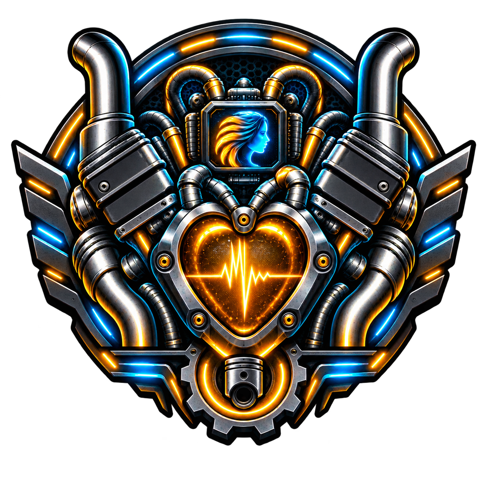
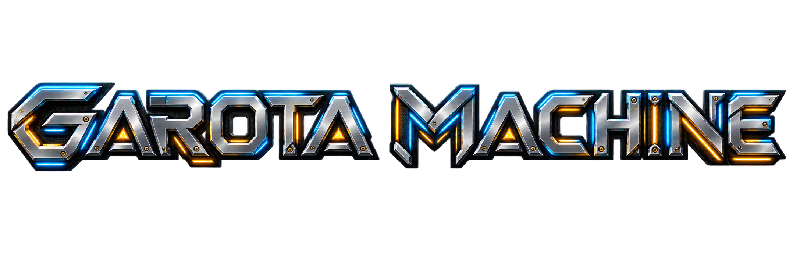

ACESSO DA COMUNIDADEAcesso gratuito ativo
A GAROTA MACHINE está disponível gratuitamente durante a campanha atual, sem cobrança.
Se quiser fortalecer a evolução do projeto, a área Apoio de projeto permanece disponível no launcher.
Baixar instalador para Windows← Voltar ao projeto